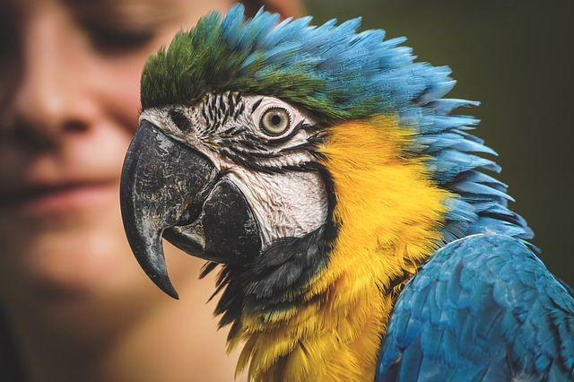
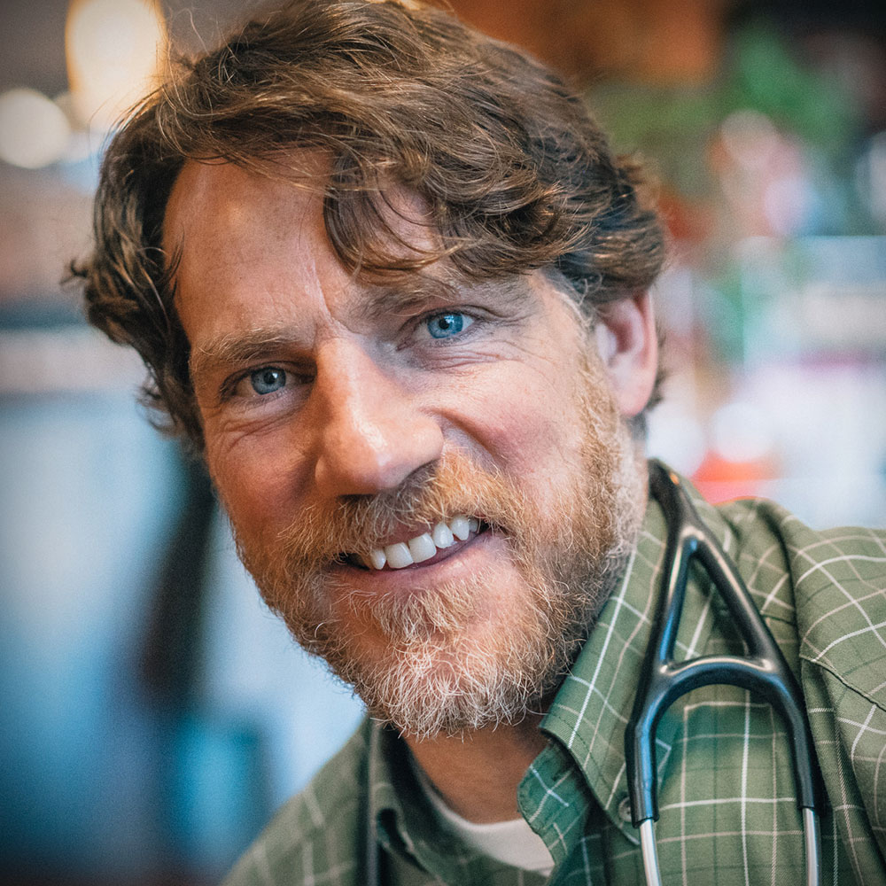
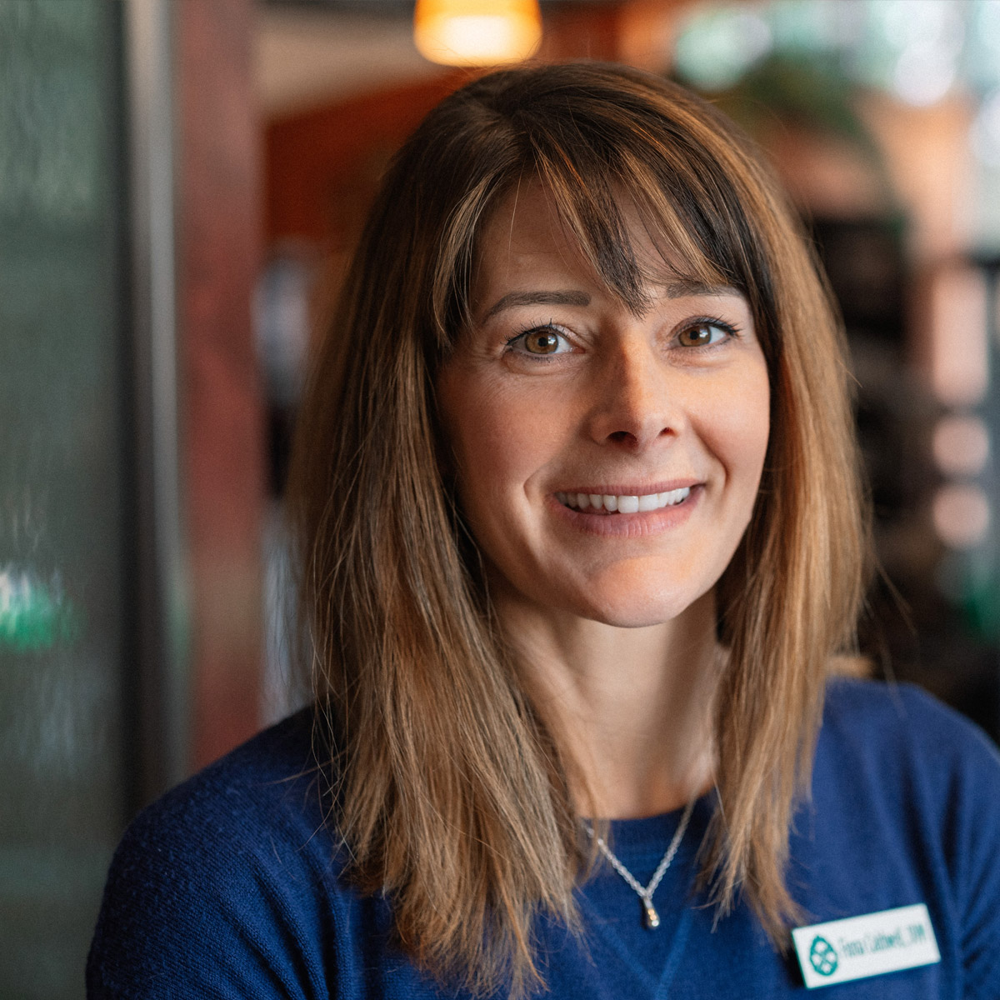

VetLife Center is more than just a primary care hospital.
We're a progressive animal health advocate and compassionate champion of integrative pet care.
Our local knowledge and gentle expertise changes pet's lives and owner's expectations.
At Habitat, we empower you to help and heal your pets with alternative and
integrative care. This means we work with you to achieve optimal pet health
through the balance of mind, body and spirit - treating the whole animal using
both Eastern and Western traditions. At Habitat, we empower you to help and heal your pets.
A NURTURING DIFFERENCE
Habitat is a source of love and nurturing that you will find without equal.
We provide informative and supportive service and we form open and trusting relationships
with pets and their people. You'll find us to be highly informed, empathetic and
enthusiastic in fulfilling our mission to help your companions enjoy better health and
live better lives.

FULL-SERVICE HOSPITAL
Habitat Veterinary Hospital offers top-rated medical, surgical and dental veterinary
care. Because we have an in-house pharmacy, lab, radiology facilities, and Intensive
Care Unit, you can make one stop for all your pet's medical care. Habitat is open for
appointments during normal business hours and most Saturdays.
Habitat is more than just a primary care hospital. We’re a progressive animal health advocate and compassionate
champion of integrative pet care. Our local knowledge and gentle expertise changes pet’s lives and owner’s expectations.
A NURTURING DIFFERENCE
Habitat is a source of love and nurturing that you will find without equal. We provide informative and supportive
service and we form open and trusting relationships with pets and their people. You’ll find us to be highly informed, empathetic and enthusiastic in fulfilling our mission to help your companions enjoy better health and live better lives.
Our Team

DR. STEVEN R. BAKER – DVM
Dr. Steven R. Baker interests are in strengthening the human-animal bond through stellar care of animals and the humans who love them is a perfect fit for this growing practice.
DR. SOHAILA L. MALEKI - DVM
Dr. Sohaila received her Veterinary Doctorate degree from Ross University School of Veterinary Medicine and finished her clinical training from UW-Madison School of Veterinary Medicine in 2004.
DR. REED LINENBERGER - DVM
Dr. Reed Lilenberger became a veterinarian for his love of companion animals and the diverse challenges that a career in veterinary medicine offers.
DR. DARRIN EVERETT - DVM
Dr. Reed Lilenberger became a veterinarian for his love of companion animals and the diverse challenges that a career in veterinary medicine offers.
DR. SARAH WOLVERTON - VOM Dr. Reed Lilenberger became a veterinarian for his love of companion animals and the diverse challenges that a career in veterinary medicine offers.
DR. ANJA W. HUNTER – DVM Dr. Reed Lilenberger became a veterinarian for his love of companion animals and the diverse challenges that a career in veterinary medicine offers.
DR. LAURA S. VEALS - DVM Dr. Reed Lilenberger became a veterinarian for his love of companion animals and the diverse challenges that a career in veterinary medicine offers.

DR. FIONA CALDWELL - DVM Dr. Reed Lilenberger became a veterinarian for his love of companion animals and the diverse challenges that a career in veterinary medicine offers.
Services
Habitat provides integrative, compassionate care for dogs, cats, rabbits*, pocket pets*, birds* and many other exotic species*. (* Select veterinarians only)
If you have any questions or concerns about your pet, always visit or call Habitat and ask to speak with one of our vets.
Acupuncture promotes natural healing. It is a safe, painless and effective way to treat a wide variety of medical problems.
Thin sterile needles are used to stimulate energies and bloodflow at designated points on the body in order to relieve pain, enhance healing and strengthen the immune system. This natural approach can be used to resolve specific symptoms or enhance overall health.
Habitat has been successfully using acupuncture to treat:
Musculoskeletal Disorders
Dermatological Problems
Pain Management
Gastrointestinal Disorders
Respiratory Problems
Urinary Disorders
“It does not matter whether medicine is old or new, so long as it brings about a cure.” By combining both conventional
and alternative pet therapies we will address all aspects of a pet’s life, from physical changes, emotional influences,
diet and lifestyle to environmental factors. Habitat proudly offers the following alternative therapies; acupuncture,
chiropractic, therapeutic Laser, food therapy and TCVM herbal therapies.
Animals need chiropractic too! Veterinary Orthopedic Manipulation (VOM) is a healing technology that
locates areas of the animal’s nervous system that have fallen out of communication. Healing is induced
by re-establishing communication. VOM exists in between veterinary medicine and chiropractic care. It
uses a hand-held device that is similar to the device used in a popular chiropractic technique called
“Activator Methods”, but is not to be confused with that technique. The differences between VOM and
chiropractic are significant and distinct. Although similar, the neurology of animals is still different
from that of humans!
Dental disease is one of the most frequently diagnosed problems in companion animals. At Habitat we
provide everything from dental disease prevention to comprehensive teeth cleanings. While cleaning
your pet’s teeth we also offer digital dental radiography. Radiography is critical for the accurate
evaluation of periodontal disease, as 60% of the disease is hidden below the gumline. Our
state-of-the-art software allows us to view images immediately with no chemicals, no wasted developing
time and fewer retakes.
Radiology is an invaluable tool in assessing animals with all types of diseases. Our digital radiology equipment provides us with a quick and accurate method of diagnosing problems, while minimizing exposure to radiation.
Most patients won’t need any sedation and results can be discussed at the time of your appointment.
Diagnosing your pet’s problems and providing a comprehensive treatment plan is our main goal. Our in house laboratory allows us to perform tests quickly and efficiently, lessening the time it takes to diagnose a disease.
For more advanced laboratory tests we use West Vet Laboratory, a locally owned and operated veterinary laboratory.
In-patient hospital care for acute injuries and illness: When your pet requires more advanced treatments such as intravenous fluids, IV medications or monitoring our staff can help nurse your pet back to health. While we are not a 24hr emergency care facility, we do routinely see acute injuries and illness that we are happy
to schedule for treatment as soon as possible.
In veterinary medicine, better care begins by listening to your clients. At Habitat we cannot stress how important you are in providing us with a history of how your pet is acting at home. With these clues and a thorough physical exam we can discuss prevention, diagnosis, and treatment of diseases. We are here to help
provide you with the tools you need to help your pet feel better.
Pharmaceutical medications, herbal medications, supplements and vitamins.
Habitat has a complete pharmacy available to provide your pet with a variety of treatment option.
Feeding an optimal diet will prevent many health problems in your companion and the best way to ensure that they live a long and healthy life. Skin and ear disease as well as more serious conditions such as metabolic diseases, arthritis and obesity can be controlled through proper nutrition. Habitat offers a variety of all natural premium diets,
treats and whole food supplements providing the essential ingredients for the optimal health of your companion.
Finding a balanced wellness plan for your pet will allow them to live a long and healthy life. We routinely consult clients with senior pets on diet, exercise, behavior changes and quality of life. Using an integrative approach we keep senior animals living longer than ever! When it’s time to make the hard decision to let your pet go we are available to talk you through the process and make sure they are as
comfortable as possible in their last days. For this reason we do offer euthanasia as an end of life choice.